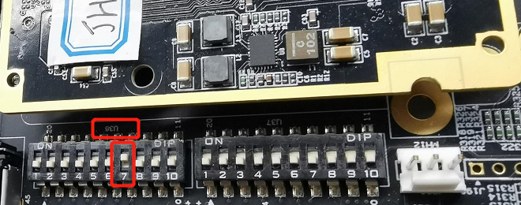
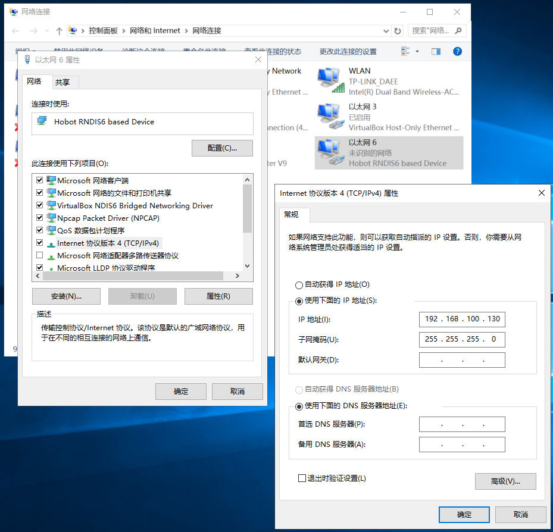
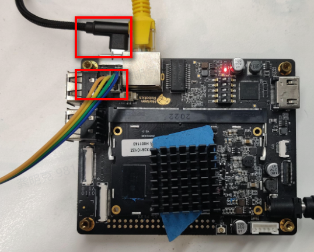

4.3.18.5. USB端口调试使用指南
引言
编写目的
描述xj3 usb使用场景及方式。
术语约定
| 缩写 | 全称 |
|---|---|
| USB | Universal Serial Bus |
| UVC | USB Video Class |
| UAC | USB Audio Class |
| HID | Human Interface Device |
| RNDIS | Remote Network Driver Interface Specification |
| CDC | Communication Device Class |
| OTG | On The Go |
| Fastboot | Android线刷工具, uboot已支持 |
读者对象和阅读建议
该文档针对需要使用到USB相关的应用工程师，测试工程师以及相关工程人员等，文档提供了该部分软件使用上的各层面的信息以及大致的概念，如果涉及实际接口开发，请参考对应的软件开发手册。
总体概述
X3J3芯片有一个DWC3 USB 控制器, 为一个静态DRD(双角色)控制器. 即同一时间作为主机或者从机模式。其中OTG功能通过一根GPIO连接芯片和USB_ID pin, 通过该pin来通知驱动进行usb主从驱动切换。 常见主机端驱动有USB Mass Storage, HID(鼠标, 键盘), UVC(USB摄像头), USB网卡, USB Wi-Fi等。 常见设备端驱动有虚拟串口(g_serial), 虚拟网卡(g_ether), 虚拟存储(g_mass_storage), uvc-gadget, uaadb, fastboot, ums等。其中fastboot, ums 为uboot支持的功能。
本文主要介绍设备端驱动如何使用。
Adb
目前开发板启动默认处于adb调试模式;
故直接接micro-usb线到电脑即可;
设备管理器会出现一个xj3的设备;
PC端安装adb工具，参考https://wiki.lineageos.org/adb_fastboot_guide.html，即可使用adb shell, adb push, adb pull等功能，故开发者视情况可只用usb调试，而无需接串口线；
adbd目前为init进程默认启动项, 开发者可使用service adbd start/stop/restart/status等命令进行控制；
Fastboot
目前fastboot有如下三种方式进入
linux shell, 敲reboot fastboot
进uboot shell, 敲fastboot 0
拨码开关, boot_sel[15]: On (X底板: U710 Dip[7], J底板: U38 Dip[7])(如果不是DVB开发板, 一般无此拨码开关, 故此项不适用) 
使用micro usb线(即常见android手机线)链接microAB口
主机端会产生一个Android Phone的设备 有些电脑无法自动更新驱动, 则使用附件驱动android_hobot_winusb.zip (使用方法参考内部readme.md)
PC端安装fastboot工具,可参考https://wiki.lineageos.org/adb_fastboot_guide.html，如需要使用oem ramdump, flash 0x0 disk.img等功能, 请使用附件(fastboot.tar.gz)
拷贝out\target\deploy目录下你需要烧录的image
可使用fastboot线刷镜像，烧录命令fastboot flash 0x0 disk.img
虚拟串口
开发板
service adbd stop
modprobe g_serail
echo hello > /dev/ttyGS0 # ttyGS0为开发板虚拟串口节点
dmesg > /dev/ttyGS0
PC端
Linux端，picocom –b 115200 /dev/ttyACM0 # ttyACM0 为Linux PC端产生的虚拟串口节点，或者minicom /dev/ttyACM0
Windows端，利用SecureCRT, putty等终端工具查看
虚拟网口
开发板
service adbd stop
modprobe g_ether
ifconfig usb0 192.168.100.100
PC端
Linux端，ifconfig -a，ifconfig enp0s20f0u6 192.168.100.101，enp0s20f0u6为PC端重命名usb0产生的网卡
Windows端，安装附件rndis驱动 rndis_hobot_windriver.zip(请参考内部readme)
rndis win10 driver
Download & Unzip attachment rndis_hobot_windriver.zip
R-click “5-runasadmin_register-CA-cer.cmd” and “Run as administrator”*
In Device Manager, expand “Ports (COM & LPT)”, R-click “Serial USB device (COM3)” > Update Driver Software…
Browse for my computer for driver software > Select extract folder
配置新增以太网设备ip 网络与internet设置 → 新增以太网设备 → 右键点击属性 → ineternet 协议版本4 
开发板 PC互相ping通或iperf测试
虚拟大容量存储
开发板
service adbd stop
unmount /userdata # 目前userdata分区无数据, 可暂时拿来使用
modprobe g_mass_storage file=/dev/mmcblk0p12 removable=1
PC端
Win10 会出现新磁盘设备, 格式化为FAT32，即可进行文件拷贝等磁盘读写操作，(开发板重新 mount /dev/mmcblk0p12 /userdata)
UVC-Gadget
uvc-gadget即xj3开发板作为usb摄像头功能
环境:
连接xj3开发板串口及usb口.
测试工具:
windows主机端: win10 相机, PotPlayer, amcap, Zoom, 腾讯会议等支持UVC协议的程序 PotPlayer可支持yuv, mjpeg, h264等多种格式: Pot-Player64_1.7.21283_Dev_20200831.7z
使用方法请参考USB Webcam使用说明。
UAC使用方法
配置及使用
本章节主要介绍使用UAC需要准备的配置
配置说明
windows系统：PC端需安装xmos工具，支持PC端可枚举到UAC设备。在加载驱动后，PC端可以查看到虚拟声卡设备 ubuntu系统：加载驱动后，终端在/dev/snd下可查看到新生成的设备节点
接线说明
连接开发板的串口和usb口，并连接电脑
aplay/arecord使用方法
本章节主要介绍使用aplay/arecord调试UAC的方法
设备端配置
系统加载虚拟声卡驱动命令：
service adbd stop
modprobe g_audio p_chmask=0x3
使用Micro-USB口连接开发板与PC。PC端通过设备管理器->声音、视频和游戏控制器产看是否新增UAC设备 系统加载实际声卡驱动命令：
modprobe ac101
modprobe ac108_driver
modprobe hobot-dma
modprobe hobot-cpudai
modprobe hobot-snd-96 snd_card=0
开发板通过上述方法加载驱动，创建虚拟声卡，检查虚拟声卡是否创建成功的命令如下
cat /proc/asound/cards
0 [UAC2Gadget ]: UAC2_Gadget - UAC2_Gadget UAC2_Gadget 0
1 [hobotsnd0 ]: hobotsnd0 - hobotsnd0 hobotsnd0
执行如下命令，查看创建的设备节点信息
ls /dev/snd
by-path controlC0 controlC1 pcmC0D0c pcmC0D0p pcmC1D0c pcmC1D1p timer
其中，pcmC0D0c/pcmC0D0p是虚拟声卡的设备节点信息 pcmC1D0c/pcmC1D1p是真实声卡的设备节点信息
使用方法
通过上述方法加载驱动成功后，就可以通过arecord/aplay进行采集/播放的操作
windows系统
PC端选择外置USB audio为默认声卡设备
PC端播放音频，通过播放器打开指定音频文件播放。开发板执行如下命令
arecord -Dhw:0,0 -c 2 -r 48000 -f S16_LE -t wav -d 6 test.wav //保存文件
aplay -Dhw:1,1 test.wav //实际设备节点播放
arecord -Dhw:0,0 -c 2 -r 48000 -f S16_LE -t wav -d 6 | aplay -Dhw:1,1 //实时播放
PC端录制音频，搜索“录音机”即可，开始录音操作。开发板执行如下命令
arecord -Dhw:1,0 -c 2 -r 48000 -f S16_LE -t wav -d 5 | aplay -Dhw:0,0
用PC端的录音机播放文件，检查录音文件是否正常
Linux系统
ubuntu系统下，打开Terminal。开发板和PC侧通过如下方式验证UAC虚拟声卡是否正常，开发板录制，PC端播放指定音频文件(准备音频文件)。执行如下命令
开发板录音
arecord -Dhw:0,0 -c 2 -r 48000 -f S16_LE -t wav –d 5 test.wav
PC Terminal播放
aplay –Dhw:1,0 –c 2 –r 48000 –f S16_LE –t wav –d 5 48k.wav
开发板侧播放test.wav文件，检查录音文件是否正常
PC端录音，开发板播放指定音频文件(准备音频文件)。执行如下命令
开发板播放
aplay -Dhw:0,0 -c 2 -r 48000 -f S16_LE -t wav 48k.wav
PC Terminal录音
arecord –Dhw:1,0 –c 2 –r 48000 –f S16_LE –t wav test.wav
PC侧播放test.wav文件，检查录音文件是否正常
复合设备(usb-gadget.sh)
usb-gadget 支持多功能复合设备, 可参考legacy目录下的g_mult等ko, 或者利用configfs配置自定义的多功能复合设备。 这里以usb-gadget.sh脚本为例, 描述常见复合设备。（开发者亦可参考usb-gadget.sh脚本配置自己的复合设备）
/etc/init.d/usb-gadget.sh –h
例1: 单个rndis设备 x3开发板 >>
service adbd stop
/etc/init.d/usb-gadget.sh start rndis
ifconfig usb0 192.168.100.100
windows PC rndis 配置ip 192.168.100.199
windows PC和开发板互相ping 通
例2: uvc + rndis 复合设备
service adbd stop
/etc/init.d/usb-gadget.sh start uvc-rndis
ifconfig usb0 192.168.100.100
usb_webcam –b –e 2 –t 9
windows 配置rndis ip 192.168.100.199
互相可以ping通，相机/potplayer等程序可以打开usb摄像头
例3: uvc + uac复合设备
uvc-uac-driver.sh # 加载uvc, uac, micphone, speaker驱动
uac-gadget & # 跑uac的程序
usb_webcam –b –e 2 –t 9 # uvc的程序
然后主机端使用企业微信, 飞书, zoom, skype, 腾讯视频等即可进行语音, 视频聊天。
主机端及otg相关
xj3 usb控制器是一个static drd控制器, 即静态可配置双角色控制器。 可运行时切换为主机模式或从机模式, 作为主机可以通过hub接最多127个设备, 作为设备只能作为一个gadget。
关于主机端及otg相关信息如下:
Q. 如何切换主从模式?
A. dvb开发板开机默认在从机模式, 当且仅当插入otg线后, 切换到主机模式。sdb开发板默认工作在主机模式, 当且仅当micro usb线连接后, vbus供电后, sdb开发板切换到设备端。
Q. 命令行能否切换主从模式?
A. echo host > /sys/devices/platform/soc/b2000000.usb/b2000000.dwc3/role # 切换到主模式
echo device > /sys/devices/platform/soc/b2000000.usb/b2000000.dwc3/role # 切换到从模式
Q. otg实现的相关驱动?
A. 复用的内核驱动extcon-usb-gpio驱动。(代码路径: kernel/drivers/extcon/extcon-usb-gpio.c)
sysfs路径 >> /sys/bus/platform/drivers/extcon-usb-gpio
Q. 主机端驱动?
A. 默认开启了常见如U盘, HID(鼠标键盘), uvc等。如开发者需要更多的功能, 可自行内核menu config配置予以开启。